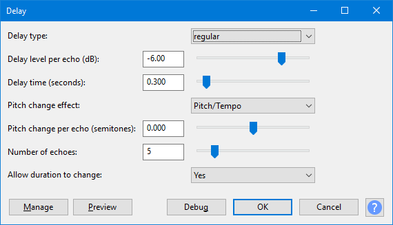

Delay
- Accessed by:
- 
{kind=link}
Delay type
- Regular: Each echo is delayed by the same amount.
- Bouncing ball: Makes the echoes occur increasingly close together (faster).
- Reverse bouncing ball: Makes the echoes occur increasingly far apart (slower).
Delay level per echo (dB)
This controls the amount in dB by which each successive echo will change loudness. The more negative this value, the more the echoes will die away. Positive values cause successive echoes to be louder. When set to 0.0, all echoes will be the same volume.
| Because echoes are often added to the original audio, the processed audio will often have a higher peak level than the original. If the output exceeds 0 dB (full track height) and so triggers the red clipping warning lights in Playback Meter Toolbar, you should open , ensure "Amplification (dB)" shows a negative dB value (not "0.0 dB") then click .
If "Amplification (dB)" in Amplify shows "0.0 dB", the track does not contain 32-bit audio and the clipping cannot be repaired. In that case, Delay, use Amplify to reduce the track to a lower amplitude then reapply Delay. |
Delay time (seconds)
This controls the time between echoes. For the Bouncing Ball types of delay, this sets the delay time for the longest (slowest) echo.
Pitch change effect
- Pitch/Tempo: Changes the pitch in the same way that the Change Speed effect causes a change in pitch. The sound quality of each echo is very good, but an increase in pitch speeds up the delayed audio and a decrease in pitch slows it down. The echoes will be noticeably desynchronized with any comparable echoes in other tracks where "Pitch/Tempo" was not applied.
- LQ Pitch Shift: Changes the pitch while maintaining the same tempo in a similar way to the Change Pitch effect. The sound quality of each echo is of lower quality than the "Pitch/Tempo" effect (including a short additional echo on percussive sounds) and the delay time will often be a little longer than specified. However, interesting "spiraling" effects can be produced.
Pitch change per echo (semitones)
This controls the amount in semitones by which each successive echo will change pitch. The change can be set to fractions of a semitone which can produce a "glissando" type of delay. When set to zero, the pitch change effect is disabled.
Number of echoes
This controls how many echoes are produced.
Allow duration to change
- Yes: (Default). Allows the processed audio to lengthen so as to accommodate all the requested echoes.
- No: The processed audio is trimmed to the same length as the original selection. Any echoes that would have occurred after the end of the original selection will be deleted. Choose this option if you need to keep the delayed track synchronized with other tracks in the project.
Buttons
Clicking on the command buttons give the following results:
- gives a dropdown menu enabling you to manage presets for the tool and to see some detail about the tool. For details see Manage presets.
- plays a short preview of what the audio would sound like if the effect is applied with the current settings, without making actual changes to the audio. The length of preview is determined by your setting in , the default setting is 6 seconds.
- applies the effect to the selected audio with the current effect settings.
- aborts the effect and leaves the audio unchanged.
 brings you to the appropriate page in the Manual, this page.
brings you to the appropriate page in the Manual, this page.